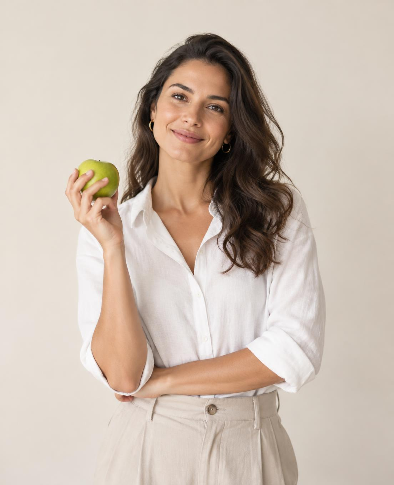
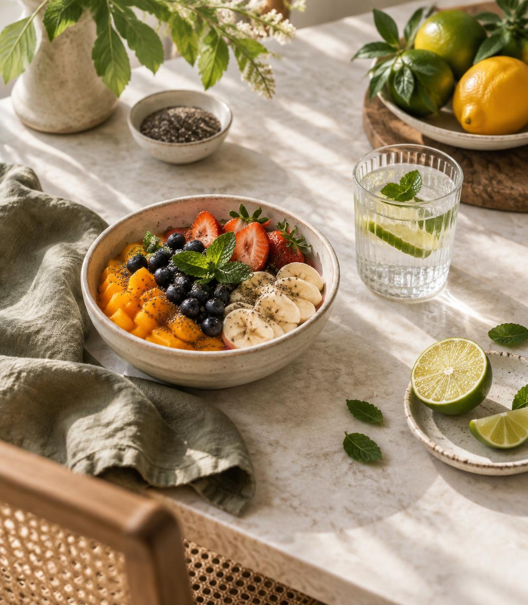

Reeducação alimentar
Orientação para desenvolver hábitos alimentares mais equilibrados e adequados à rotina.
Atendimento nutricional
Um acompanhamento nutricional pensado para compreender sua rotina e ajudar você a construir hábitos alimentares mais conscientes.
Agende pelo WhatsApp
Para você
O acompanhamento pode ser direcionado a diferentes objetivos e necessidades, de acordo com as áreas de atuação da profissional.
Orientação para desenvolver hábitos alimentares mais equilibrados e adequados à rotina.
Orientação nutricional relacionada à prática de atividades físicas, quando oferecida pela profissional.
Acompanhamento de acordo com as fases da vida e necessidades atendidas pela nutricionista.
Passo a passo
Entenda as etapas do atendimento nutricional.
Um momento para conversar sobre sua rotina, seus hábitos alimentares e seus objetivos.
A profissional reúne as informações necessárias para compreender suas necessidades.
Você recebe orientações nutricionais adequadas ao que foi conversado durante a consulta.
Conforme o serviço contratado, o acompanhamento permite revisar as orientações e conversar sobre sua evolução.

Quem cuida de você
Conheça a profissional por trás do atendimento e sua forma de cuidar da alimentação.
Espaço reservado para uma breve apresentação, formação, abordagem de trabalho e diferenciais confirmados pela nutricionista.
Conheça o atendimentoEscolha seu caminho
Conheça as opções de atendimento disponíveis.
Atendimento individual para conversar sobre seus hábitos, necessidades e objetivos.
Continuidade do cuidado nutricional, conforme a modalidade oferecida pela profissional.
Consulte pelo WhatsApp quais formatos estão disponíveis e como funcionam.
Antes de começar
Algumas respostas para ajudar você a dar o próximo passo.
Entre em contato para confirmar se essa modalidade está disponível.
Consulte a nutricionista para saber a duração prevista da consulta.
Entre em contato para consultar o endereço e as opções de atendimento presencial.
Você pode entrar em contato pelo WhatsApp para consultar os horários e as informações de agendamento.
Vamos conversar?
Entre em contato para conhecer os serviços e tirar suas dúvidas sobre as consultas.
WhatsApp em breve